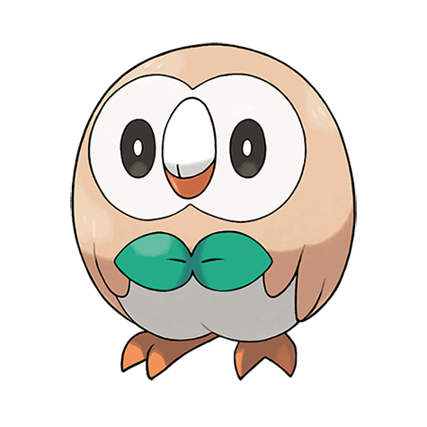
Brindibou
PlanteVol
C'est le Pokémon Plumefeuille. Il mesure 0,3 mètre et pèse 1,5 kilo.
Il attaque en tirant des plumes acérées. La force de ses coups de patte est également redoutable.
Brindibou➜Efflèche➜Archéduc
Voici des Pokémon de quatre régions : Alola, Johto, Hoenn et Paldea. Pour chacun, tu découvres son nom, son type, sa taille, son poids, ce qu'il aime faire, et ses évolutions.

C'est le Pokémon Plumefeuille. Il mesure 0,3 mètre et pèse 1,5 kilo.
Il attaque en tirant des plumes acérées. La force de ses coups de patte est également redoutable.
Brindibou➜Efflèche➜Archéduc

C'est le Pokémon Chat Feu. Il mesure 0,4 mètre et pèse 4,3 kilos.
Laissez ce Pokémon respirer, ou il se renfermera sur lui-même. Même s'il devient affectueux, allez-y doucement avec les caresses.
Flamiaou➜Matoufeu➜Félinferno
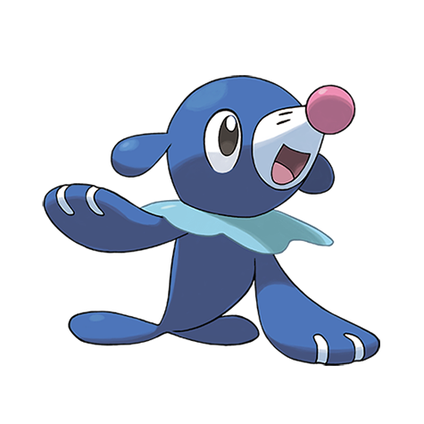
C'est le Pokémon Otarie. Il mesure 0,4 mètre et pèse 7,5 kilos.
À force de s'entraîner quotidiennement, les ballons qu'il gonfle avec son nez grossissent de jour en jour.
Otaquin➜Otarlette➜Oratoria
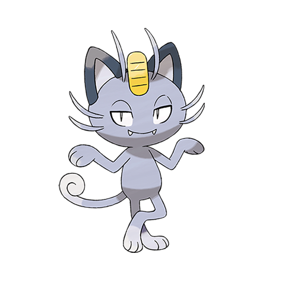
C'est un Pokémon de type Ténèbres. Il mesure 0,4 mètre et pèse 4,2 kilos.
Par le passé, il menait une vie de luxe auprès de la famille royale d'Alola, et il en a gardé des goûts alimentaires très sélectifs.
Miaouss d'Alola➜Persian d'Alola
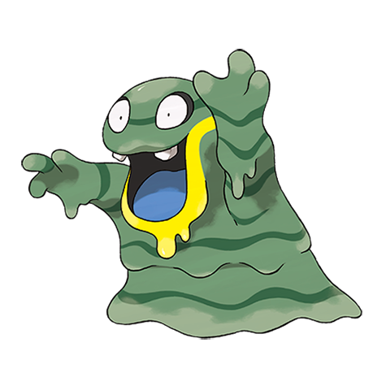
C'est le Pokémon Dégueu. Il mesure 0,7 mètre et pèse 42 kilos.
Il aime passionnément les ordures. Il les digère à toute vitesse pour créer d'étincelants cristaux de matière toxique.
Tadmorv d'Alola➜Grotadmorv d'Alola
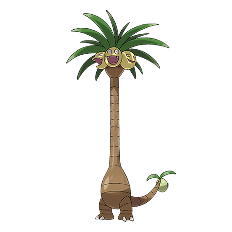
C'est le Pokémon Fruitpalme. Il mesure 10,9 mètres et pèse 415,6 kilos.
L'exposition aux rayons éblouissants du soleil a révélé sa véritable apparence et son potentiel réel.
Noeunoeuf➜Noadkoko d'Alola
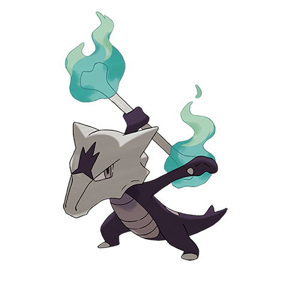
C'est le Pokémon Gard'Os. Il mesure 1 mètre et pèse 34 kilos.
Le soir venu, il enflamme son os, puis se met à danser jusqu'au petit matin, à la mémoire de ses compagnons disparus.
Osselait➜Ossatueur d'Alola
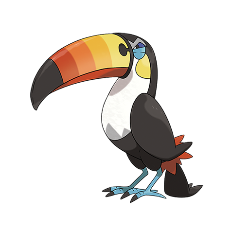
C'est le Pokémon Canon. Il mesure 1,1 mètre et pèse 26 kilos.
Ils communiquent entre eux en se frappant mutuellement sur le bec. La force et la cadence des coups en disent long sur leur état d'esprit.
Picassaut➜Piclairon➜Bazoucan

C'est le Pokémon 5 Étoiles. Il mesure 1,4 mètre et pèse 35,6 kilos.
Le motif qui orne son dos aurait un lien avec les étoiles, mais nul ne sait encore en quoi consiste ce lien.
Coxy➜Coxyclaque

C'est le Pokémon Feuille. Il mesure 0,9 mètre et pèse 6,4 kilos.
Lorsqu'il se bat, Germignon secoue sa feuille pour tenir son ennemi à distance. Un doux parfum s'en dégage également, apaisant les Pokémon qui se battent et créant une atmosphère agréable et amicale.
Germignon➜Macronium➜Méganium

C'est le Pokémon Souris Feu. Il mesure 0,5 mètre et pèse 7,9 kilos.
Héricendre se protège en faisant jaillir des flammes de son dos. Ces flammes peuvent être violentes s'il est en colère. Cependant, s'il est fatigué, seules quelques flammèches vacillent laborieusement.
Héricendre➜Feurisson➜Typhlosion

C'est le Pokémon Dragon. Il mesure 1,8 mètre et pèse 152 kilos.
Il apparaît à la surface de l'océan lorsqu'une tempête arrive. Dès qu'il croise un Dracolosse, un combat féroce s'ensuit.
Hypotrempe➜Hypocéan➜Hyporoi
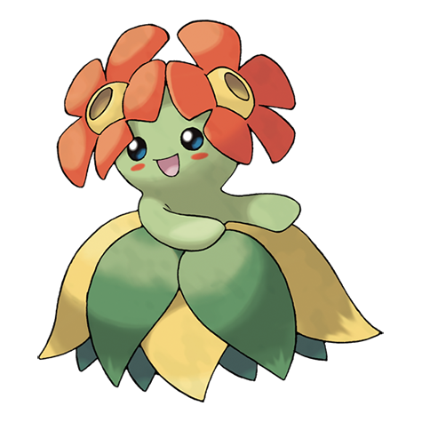
C'est le Pokémon Fleur. Il mesure 0,4 mètre et pèse 5,8 kilos.
Ce Pokémon vit en nombre dans les tropiques. Quand il danse, ses pétales frottent les uns contre les autres et émettent un son mélodieux.
Mystherbe➜Ortide➜Joliflor

C'est le Pokémon Mâchoire. Il mesure 0,6 mètre et pèse 9,5 kilos.
Malgré son tout petit corps, la mâchoire de Kaiminus est très puissante. Parfois, ce Pokémon mordille les gens pour jouer, sans se rendre compte que sa morsure peut gravement blesser quelqu'un.
Kaiminus➜Crocodil➜Aligatueur
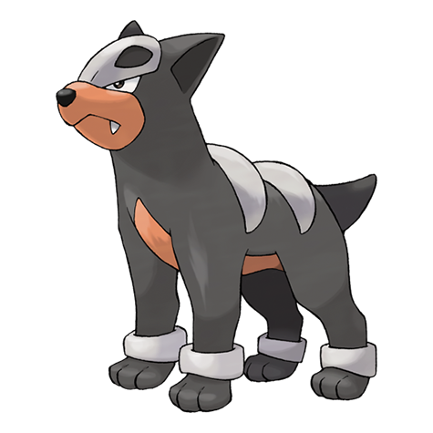
C'est le Pokémon Sombre. Il mesure 0,6 mètre et pèse 10,8 kilos.
Ce Pokémon est rusé. Il chasse en meute en communiquant avec les siens grâce à une variété de cris.
Malosse➜Démolosse

C'est le Pokémon Hibernant. Il mesure 1,8 mètre et pèse 125,8 kilos.
Son visage austère s'illumine de joie lorsqu'il savoure du miel, un aliment qu'il adore.
Teddiursa➜Ursaring

C'est le Pokémon Bois Gecko. Il mesure 0,5 mètre et pèse 5 kilos.
Arcko est doté de petits crochets sous les pattes, ce qui lui permet de grimper aux murs. Ce Pokémon attaque en frappant ses ennemis avec son épaisse queue.
Arcko➜Massko➜Jungko

C'est le Pokémon Poissonboue. Il mesure 0,4 mètre et pèse 7,6 kilos.
La nageoire sur la tête de Gobou lui sert de radar hypersensible. Il l'utilise pour sentir les mouvements de l'eau et de l'air. Ainsi, ce Pokémon peut savoir ce qui se passe autour de lui sans avoir à se servir de ses yeux.
Gobou➜Flobio➜Laggron

C'est le Pokémon Multicolor. Il mesure 1 mètre et pèse 22 kilos.
Il change de couleur pour se camoufler, mais si on cesse de lui prêter attention pendant trop longtemps, il se vexe et ne se montre plus…
Pas d'évolution.

C'est le Pokémon Insouciant. Il mesure 1,5 mètre et pèse 55 kilos.
Les cellules de Ludicolo s'activent s'il entend une musique entraînante, le rendant encore plus puissant.
Nénupiot➜Lombre➜Ludicolo
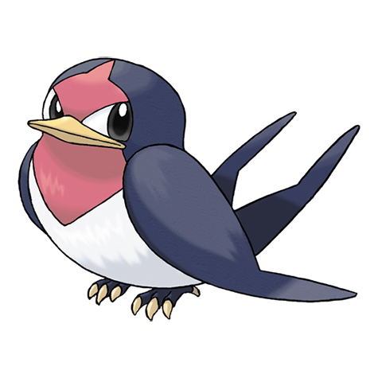
C'est le Pokémon Minirondel. Il mesure 0,3 mètre et pèse 2,3 kilos.
Nirondelle défend courageusement son territoire contre ses ennemis, même les plus puissants. Ce vaillant Pokémon est toujours prêt à relever un défi, mais s'il a faim, il se met à pleurer à chaudes larmes.
Nirondelle➜Hélédelle

C'est le Pokémon Poussin. Il mesure 0,4 mètre et pèse 2,5 kilos.
Poussifeu ne lâche pas son Dresseur, marchant maladroitement d'une semelle derrière lui. Ce Pokémon crache des flammes à 1 000 °C et des boules de feu pouvant carboniser l'ennemi.
Poussifeu➜Galifeu➜Braségali
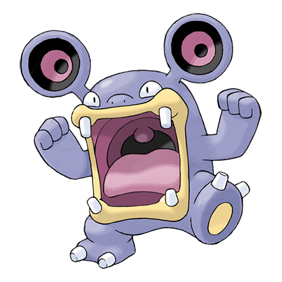
C'est le Pokémon Grosse Voix. Il mesure 1 mètre et pèse 40,5 kilos.
Ses oreilles lui servant de haut-parleurs peuvent émettre des ondes sonores dont la puissance suffit à balayer une maison.
Chuchmur➜Ramboum➜Brouhabam
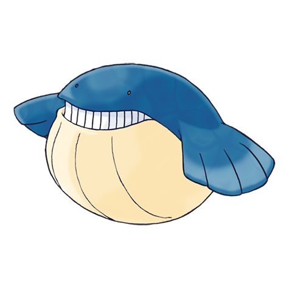
C'est le Pokémon Baleinboule. Il mesure 2 mètres et pèse 130 kilos.
Il aime faire le beau en recrachant par son évent l'eau qu'il a avalée. Il gobe une tonne de Froussardine chaque jour.
Wailmer➜Wailord

C'est le Pokémon Chat Plante. Il mesure 0,4 mètre et pèse 4,1 kilos.
Ce Pokémon lave assidûment son visage pour éviter qu'il ne s'assèche. La composition de son pelage soyeux est proche de celle des plantes.
Poussacha➜Matourgeon➜Miascarade

C'est le Pokémon Croco Feu. Il mesure 0,4 mètre et pèse 9,8 kilos.
Il s'allonge sur des pierres chaudes et produit de l'énergie de type Feu grâce à la chaleur absorbée par ses écailles rectangulaires.
Chochodile➜Crocogril➜Flâmigator

C'est le Pokémon Caneton. Il mesure 0,5 mètre et pèse 6,1 kilos.
Originaire d'une contrée lointaine, il est venu s'installer dans la région il y a longtemps. Ses ailes sécrètent un gel qui repousse l'eau et les saletés.
Coiffeton➜Canarbello➜Palmaval
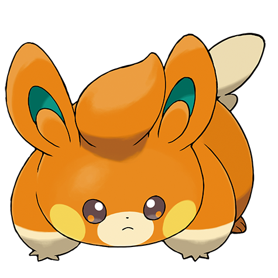
C'est le Pokémon Souris. Il mesure 0,3 mètre et pèse 2,5 kilos.
Les poches sur ses joues sont peu développées. Elles ne produisent de l'électricité que lorsqu'il les frotte avec ses coussinets.
Pohm➜Pohmotte➜Pohmarmotte
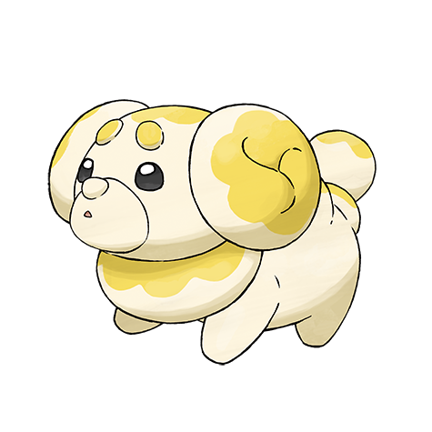
C'est le Pokémon Chiot. Il mesure 0,3 mètre et pèse 10,9 kilos.
Ce Pokémon est moite et lisse au toucher. Il fait fermenter ce qui se trouve à proximité grâce à la levure que contient son souffle.
Pâtachiot➜Briochien
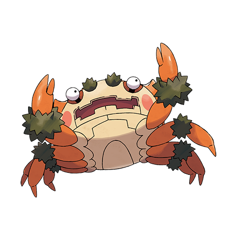
C'est le Pokémon Embuscade. Il mesure 1,3 mètre et pèse 79 kilos.
Il se poste la tête en bas sur une falaise, dans l'attente d'une proie, mais il ne peut pas rester longtemps ainsi, car le sang lui monte à la tête.
Pas d'évolution.
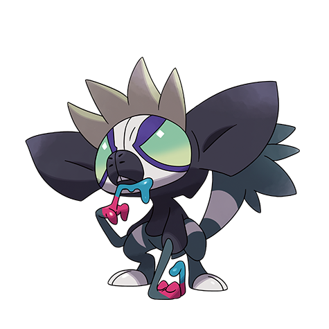
C'est le Pokémon Singe Venin. Il mesure 0,7 mètre et pèse 27,2 kilos.
Sa salive toxique change de couleur selon son alimentation. Il en enduit ses doigts pour dessiner des motifs sur les arbres de la forêt.
Gribouraigne➜Tag-Tag
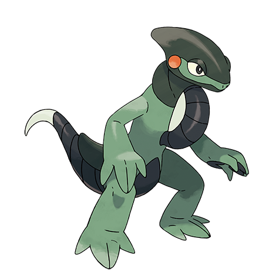
C'est le Pokémon Monture. Il mesure 1,6 mètre et pèse 63 kilos.
Des fresques vieilles de 10 000 ans laissent penser que ce Pokémon transportait des êtres humains sur son dos depuis les temps anciens.
Pas d'évolution.
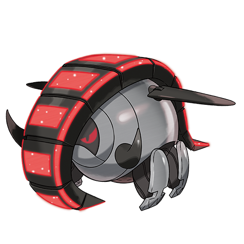
C'est le Pokémon Paradoxe. Il mesure 0,9 mètre et pèse 240 kilos.
Il ressemble beaucoup à une arme sophistiquée qui serait d'origine extraterrestre, selon une revue consacrée aux phénomènes paranormaux.
Pas d'évolution.

C'est le Pokémon Olive. Il mesure 0,3 mètre et pèse 6,5 kilos.
Le fruit qui surmonte sa tête sécrète une huile qui le protège de ses adversaires. Ce liquide a un goût si désagréable qu'il fait grimacer.
Olivini➜Olivado➜Arboliva
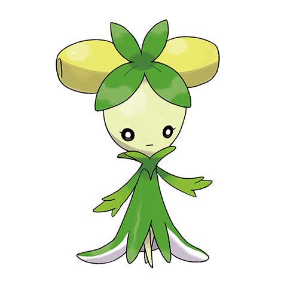
C'est le Pokémon Olive. Il mesure 0,6 mètre et pèse 11,9 kilos.
Ce Pokémon partage volontiers son huile fraîche et délicieuse. Il vit en harmonie avec les êtres humains depuis les temps anciens.
Olivini➜Olivado➜Arboliva
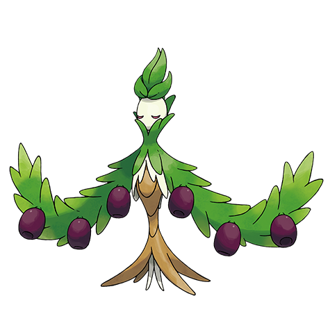
C'est le Pokémon Olive. Il mesure 1,4 mètre et pèse 48,2 kilos.
Calme et bienveillant, il partage son huile délicieuse et riche en nutriments avec les Pokémon affaiblis.
Olivini➜Olivado➜Arboliva
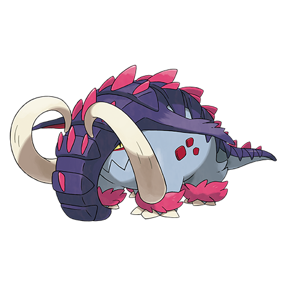
C'est le Pokémon Paradoxe. Il mesure 2,2 mètres et pèse 320 kilos.
Ce Pokémon a été aperçu à plusieurs reprises ces dernières années. Son nom s'inspire d'une créature évoquée dans un certain livre.
Pas d'évolution.
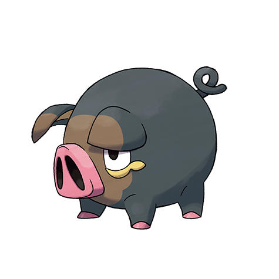
C'est le Pokémon Pourceau. Il mesure 0,5 mètre et pèse 10,2 kilos.
Il possède un sens de l'odorat développé qu'il utilise uniquement pour chercher de la nourriture, ce qu'il fait à longueur de journée.
Gourmelet➜Fragroin
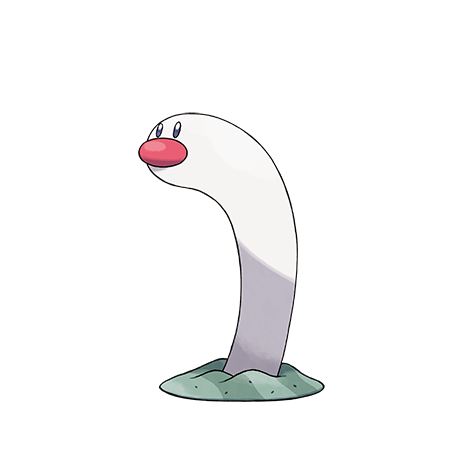
C'est le Pokémon Congre. Il mesure 1,2 mètre et pèse 1,8 kilo.
Il détecte l'odeur de Délestin à plus de vingt mètres, ce qui lui donne le temps de s'enfouir dans le sable.
Taupikeau➜Triopikeau

C'est le Pokémon Feu Bretteur. Il mesure 1,6 mètre et pèse 62 kilos.
Les lames de ses épées sont animées par le courroux d'une âme guerrière qui a péri avant de pouvoir accomplir son but.
Charbambin➜Malvalame